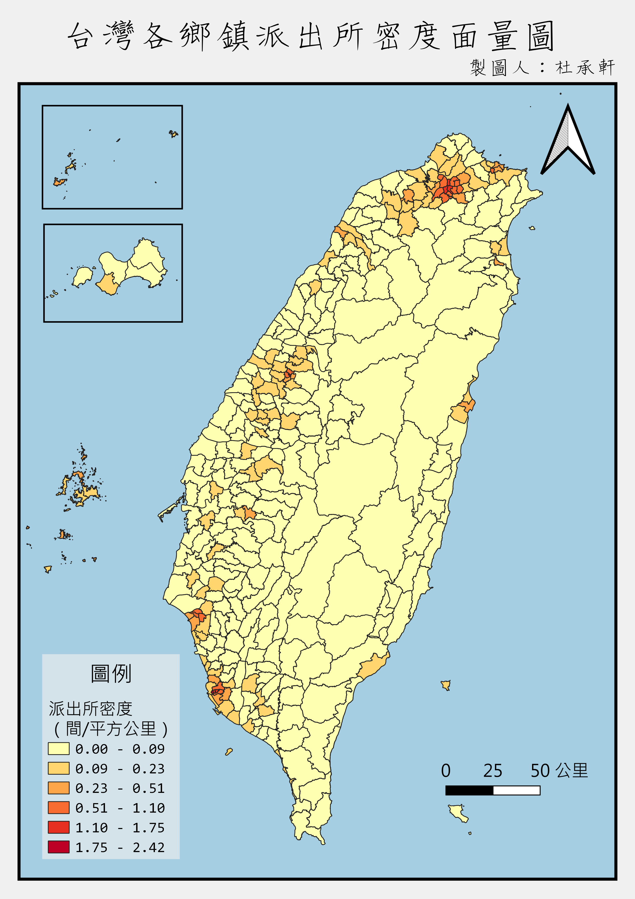
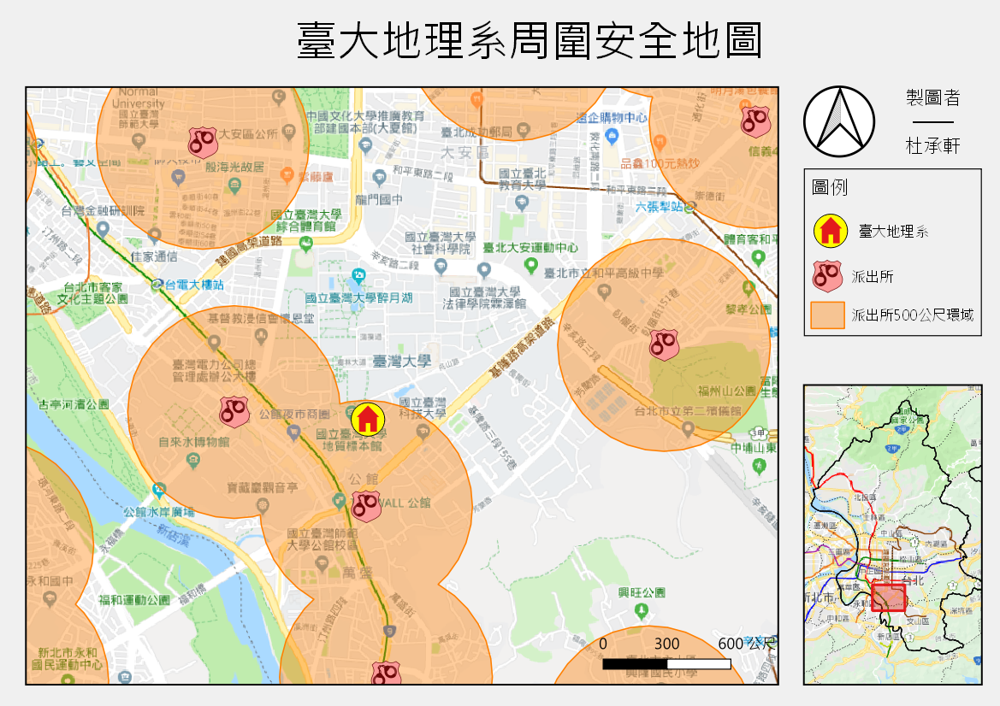

QGIS實作：台大地理營地圖工作坊
*QGIS兩小時入門課程與實作
相關連結：
2019年暑假受邀至台大地理營擔任地圖工作坊講師，教導高中生認識空間資料與地圖，並利用QGIS軟體動手實作。因此設計兩小時的課程，讓學員能實際動手操作，並能得到繪製完成的地圖成果。
除了空間資料的教學外，在實作方面分成三大主題：
① 主題地圖繪製：點線面資料呈現、計算點在多邊形數目及計算密度、面量圖繪製、調整地圖樣式、空間視覺化
② 匯入經緯度座標點位、空間運算（環域分析）、介接Google地圖及台灣百年歷史地圖WMTS服務、全覽圖繪製

